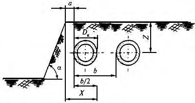
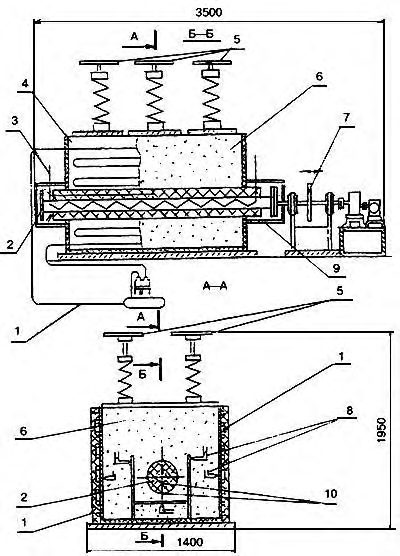
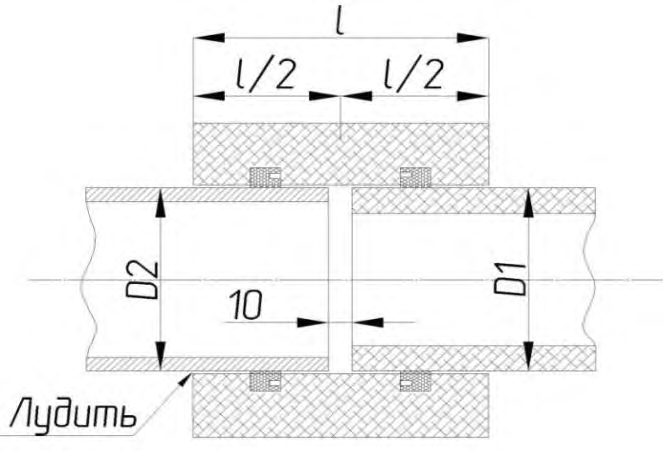
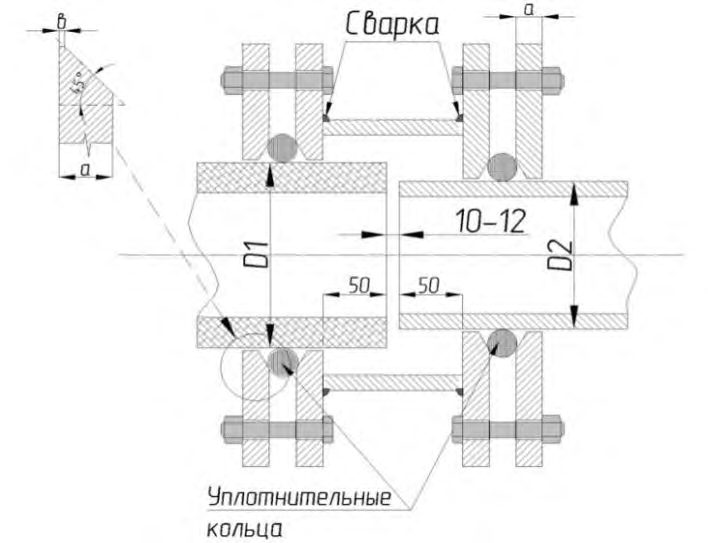
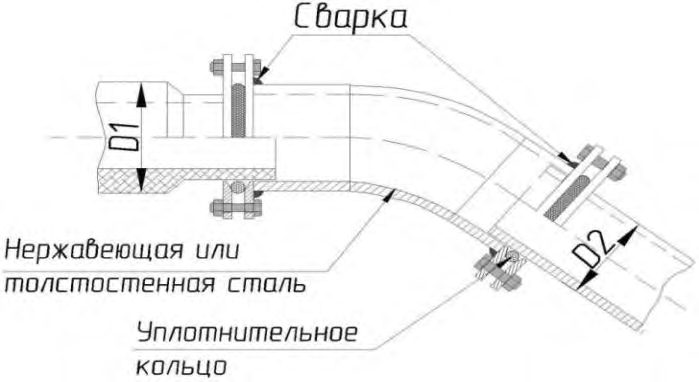
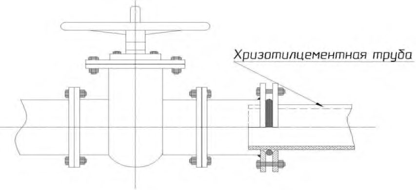
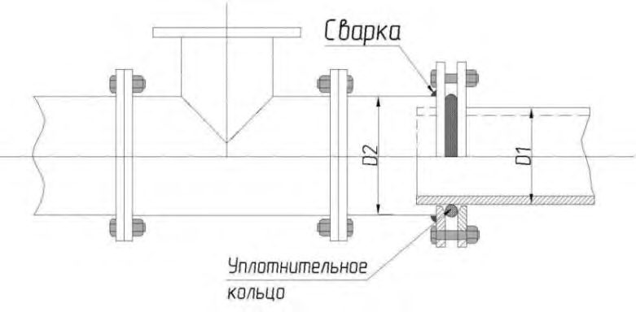
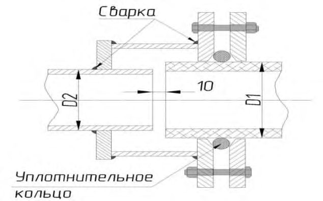

СП 315.1325800.2017 «Тепловые сети бесканальной прокладки. Правила проектировани»
О документе: разработчики, утверждение, регистрация, ключевые слова
СВОД ПРАВИЛ
СП 315.1325800.2017
Издание официальное
Москва 2017
- 1 ИСПОЛНИТЕЛИ -Открытое акционерное общество «Объединение ВНИПИэнергопром» (ОАО «ВНИПИэнергопром») и Акционерное общество «Инжпроектсервис» (АО «Инжпроектсервис»)
- 2 ВНЕСЕН Техническим комитетом по стандартизации ТК 465 «Строительство»
- 3 ПОДГОТОВЛЕН К УТВЕРЖДЕНИЮ Департаментом градостроительной деятельности и архитектуры Министерства строительства и жилищно-коммунального хозяйства Российской Федерации (Минстрой России)
- 4 УТВЕРЖДЕН Приказом Министерства строительства и жилищно-коммунального хозяйства Российской Федерации от 20 октября 2017 г. № 1456/пр и введен в действие с 21 апреля 2018 г.
- 5 ЗАРЕГИСТРИРОВАН Федеральным агентством по техническому регулированию и метрологии (Росстандарт)
6 ВВЕДЕН ВПЕРВЫЕ
В случае пересмотра (замены) или отмены настоящего свода правил соответствующее уведомление будет опубликовано в установленном порядке. Соответствующая информация, уведомление и тексты размещаются также в информационной системе общего пользования - на официальном сайте разработчика (Минстрой России) в сети Интернет
© Минстрой России, 2017
Настоящий нормативный документ на может быть полностью или частично воспроизведен, тиражирован и распространен в качестве официального издания на территории Российской Федерации без разрешения Минстроя России
Дата введения - 2018-04-21
УДК ОКС 91.140.10
Ключевые слова: тепловые сети, бесканальная прокладка, проектирование, строительство, стальные трубы, полимерные трубы, хризотилцементные трубы, транспортирование и хранение, испытания теплопроводов, энергоэффективность
\_\_\_\_\_\_\_\_\_\_\_\_\_\_\_\_\_\_\_\_\_\_\_\_\_\_\_\_\_\_\_\_\_\_\_\_\_\_\_\_\_\_\_\_\_\_\_\_\_\_\_\_\_\_\_\_\_\_\_\_\_\_\_\_\_\_\_\_\_
Введение
Настоящий свод правил разработан в соответствии с Федеральным законом от 30 декабря 2009 г. № 384-ФЗ «Технический регламент о безопасности зданий и сооружений» и Федеральным законом от 22 июля 2008 г. № 123-ФЗ «Технический регламент о требованиях пожарной безопасности».
Настоящий свод правил разработан в развитие требований СП 124.13330.
Настоящий свод правил разработан авторским коллективом ОАО «ВНИПИэнергопром» ( И.Б. Новиков - руководитель темы, А.И. Коротков , Н.Н. Новикова , С.В. Романов , Е.В. Кружечкина ); АО «Инжпроектсервис» ( М.А. Степанов , Е.В. Фомичева , Е.И. Калугина ) при участии ООО «Проникс Групп» ( А.В. Жаворонков , А.В. Кожевников ), ГБУ «Мосгоргеотрест» ( А.С. Исаев ), ООО «Группа ПОЛИМЕРТЕПЛО», АО «Моспроект» ( А.В. Фишер ), АО «МОЭК-проект» ( А.И. Лейтман , Е.Л. Заморенова ), ООО «ВЭП-инжиниринг», НП «Российское теплоснабжение», НО «Ассоциация производителей и потребителей трубопроводов с индустриальной полимерной изоляцией», ОАО «НИИпроектасбест», НО «Хризотиловая ассоциация», ГУП «НИИМосстрой» и ЗАО «НИИасбестцемент».
СП 315.1325800.2017
1Область применения
2Нормативные ссылки
В настоящем своде правил использованы нормативные ссылки на следующие документы:
ГОСТ 12.1.004-91 Система стандартов безопасности труда. Пожарная безопасность. Общие требования
ГОСТ 12.1.007-76 Система стандартов безопасности труда. Вредные вещества. Классификация и общие требования безопасности
ГОСТ 12.3.009-76 Система стандартов безопасности труда. Работы погрузочно-разгрузочные. Общие требования безопасности
\_\_\_\_\_\_\_\_\_\_\_\_\_\_\_\_\_\_\_\_\_\_\_\_\_\_\_\_\_\_\_\_\_\_\_\_\_\_\_\_\_\_\_\_\_\_\_\_\_\_\_\_\_\_\_\_\_\_\_\_\_\_\_\_\_\_\_\_\_\_
Тепловые сети бесканальной прокладки. Правила проектирования Thermal networks laid in a ground. Design rules
ГОСТ 12.3.020-80 Система стандартов безопасности труда. Процессы перемещения грузов на предприятиях. Общие требования безопасности
ГОСТ 21.705-2016 Система проектной документации для строительства. Правила выполнения рабочей документации тепловых сетей
ГОСТ 14254-2015 (IEC 60529:2013) Степени защиты, обеспечиваемые оболочками (Код IP)
ГОСТ 22235-2010 Вагоны грузовые магистральных железных дорог колеи 1520 мм. Общие требования по обеспечению сохранности при производстве погрузочно-разгрузочных и маневровых работ
ГОСТ 23118-2012 Конструкции стальные строительные. Общие технические условия
ГОСТ 26653-2015 Подготовка генеральных грузов к транспортированию. Общие требования
ГОСТ 30732-2006 Трубы и фасонные изделия стальные с тепловой изоляцией из пенополиуретана с защитной оболочкой. Технические условия
ГОСТ 31416-2009 Трубы и муфты хризотилцементные. Технические условия
ГОСТ Р 54468-2011 Трубы гибкие с тепловой изоляцией для систем теплоснабжения, горячего и холодного водоснабжения. Общие технические условия
ГОСТ Р 55596-2013 Сети тепловые. Нормы и методы расчета на прочность и сейсмические воздействия
ГОСТ Р 56227-2014 Трубы и фасонные изделия стальные в пенополимерминеральной изоляции. Технические условия
СП 18.13330.2011 «СНиП II-89-90* Генеральные планы промышленных предприятий» (с изменением № 1)
СП 30.13330.2016 «СНиП 2.04.01-85* Внутренний водопровод и канализация зданий»
СП 34.13330.2012 «СНиП 2.05.02-85* Автомобильные дороги» (с изменением № 1)
СП 42.13330.2016 «СНиП 2.07.01-89* Градостроительство. Планировка и застройка городских и сельских поселений»
СП 45.13330.2017 «СНиП 3.02.01-87 Земляные сооружения, основания и фундаменты»
СП 61.13330.2012 «СНиП 41-03-2003 Тепловая изоляция оборудования и трубопроводов» (с изменением № 1)
СП 68.13330.2011 «СНиП 3.01.04-87 Приемка в эксплуатацию законченных строительством объектов. Основные положения»
СП 70.13330.2012 «СНиП 3.03.01-87 Несущие и ограждающие конструкции» (с изменением № 1)
СП 71.13330.2017 «СНиП 3.04.01-87 Изоляционные и отделочные покрытия»
СП 72.13330.2016 «СНиП 3.04.03-85 Защита строительных конструкций и сооружений от коррозии»
СП 74.13330.2011 «СНиП 3.05.03-85 Тепловые сети»
СП 124.13330.2012 «СНиП 41-02-2003 Тепловые сети»
СП 129.13330.2011 «СНиП 3.05.04-85* Наружные сети и сооружения водоснабжения и канализации»
СП 131.13330.2012 «СНиП 23-01-99* Строительная климатология» (с изменением № 2)
Примечание - При пользовании настоящим сводом правил целесообразно проверить действие ссылочных документов в информационной системе общего пользования - на официальном сайте федерального органа исполнительной власти в сфере стандартизации в сети Интернет или по ежегодному информационному указателю «Национальные стандарты», который опубликован по состоянию на 1 января текущего года, и по выпускам ежемесячного информационного указателя «Национальные стандарты» за текущий год. Если заменен ссылочный документ, на который дана недатированная ссылка, то рекомендуется использовать действующую версию этого документа с учетом всех внесенных в данную версию изменений. Если заменен ссылочный документ, на который дана датированная ссылка, то рекомендуется использовать версию этого документа с указанным выше годом утверждения (принятия). Если после утверждения настоящего свода правил в ссылочный документ, на который дана датированная ссылка, внесено изменение, затрагивающее положение, на которое дана ссылка, то это положение рекомендуется применять без учета данного изменения. Если ссылочный документ отменен без замены, то положение, в котором дана ссылка на него, рекомендуется применять в части, не затрагивающей эту ссылку. Сведения о действии сводов правил целесообразно проверить в Федеральном информационном фонде стандартов.
3Термины, определения и сокращения
- 3.1.1 бесканальная прокладка
- Прокладка трубопроводов непосредственно в грунте.
- 3.1.2 мнимая опора
- Условная точка бесканально проложенного трубопровода, не совершающая перемещений.
- 3.1.3 предизолированный трубопровод
- Трубопровод, изолируемый на предприятии-производителе.
- 3.1.4 сильфон
- Осесимметричная упругая оболочка, разделяющая среды и способная под действием давления, температуры, силы или момента силы совершать линейные, сдвиговые, угловые перемещения или преобразовывать давление в усилие.
- 3.1.5 сильфонное компенсационное устройство; СКУ
- Устройство, состоящее из одного или нескольких сильфонных компенсаторов, заключенных в корпус или ряд корпусов, обеспечивающих выполнение компенсаторами своих функций и защищающих компенсаторы от внешних воздействий.
- 3.1.6 сильфонный компенсатор; СК
- Устройство, состоящее из сильфона (сильфонов) и ограничительной арматуры, способное поглощать или уравновешивать относительные движения определенных значения и частоты, возникающие в герметично соединяемых конструкциях, и проводить в этих условиях пар, жидкости и газы.
- 3.1.7 система оперативного дистанционного контроля; СОДК
- Система, предназначенная для контроля состояния теплоизоляционного слоя пенополиуретана предизолированных трубопроводов и обнаружения участков с повышенной влажностью изоляции.
- 3.1.8 стартовый сильфонный компенсатор
- Сильфонное компенсационное устройство, срабатывающее один раз при пуске тепловой сети.
- 3.1.9 тепловая сеть
- Совокупность устройств (включая центральные тепловые пункты, насосные станции), предназначенных для передачи тепловой энергии, теплоносителя от источников тепловой энергии до теплопотребляющих установок.
- 3.1.10 фасонная часть (деталь)
- Деталь или сборочная единица трубопровода или трубной системы, обеспечивающая изменение направления, слияния или деления, расширения или сужения потока рабочей среды. 3.2 В настоящем стандарте применены следующие сокращения: ПИР - пенополиуретанизоцианурат(ная) * ; ПОС - проект организации строительства; ППМ - пенополимерминерал(ьная) ** ; ППР - проект производства работ; ППУ - пенополиуретан(овая) ** ; СОДК - система оперативно-диспетчерского контроля; ЦТП - центральный тепловой пункт. * В словосочетании «ПИР изоляция». ** В словосочетаниях «ППМ изоляция», «ППУ изоляция».
4Общие положения
- стальных труб с ППУ или ППМ тепловой изоляцией с постоянно действующей максимальной температурой теплоносителя не более 150 о С и рабочим давлением не более 1,6 МПа;
- гибких гофрированных труб из нержавеющей стали с ППУ изоляцией с максимальной температурой теплоносителя 135 о С (допускается кратковременное воздействие температуры до 150 о С, допустимое время работы на повышенной температуре принимают согласно рекомендациям предприятия-производителя) и рабочим давлением не более 1,6 МПа и гибких гофрированных труб из нержавеющей стали с ПИР изоляцией с максимальной температурой теплоносителя 160 о С (допускается кратковременное воздействие температуры до 180 °С) и рабочим давлением не более 1,6 МПа;
- гибких полимерных труб с тепловой изоляцией с максимальной температурой теплоносителя 135 о С и рабочим давлением не более 1,0 МПа и гибких полимерных труб с тепловой изоляцией с максимальной температурой теплоносителя 115 о С и рабочим давлением не более 1,6 МПа;
- хризотилцементных труб с теплостойкими кольцами при температуре теплоносителя (воды) не более 150 °С и рабочим давлением до 1,6 МПа.
- к безопасности, надежности, а также к живучести систем теплоснабжения;
- безопасности при опасных природных процессах и явлениях и (или) техногенных воздействиях;
- безопасным для здоровья человека условиям проживания и пребывания в зданиях и сооружениях;
- безопасности для пользователей зданиями и сооружениями;
- обеспечению энергосбережения и повышению энергетической эффективности;
- обеспечению надежного теплоснабжения потребителей;
- обеспечению оптимальной работы систем теплоснабжения с учетом энергосбережения в текущем состоянии и на долгосрочную перспективу;
- обеспечению безопасности окружающей среды.
При решении вопроса о целесообразности бесканальной прокладки тепловых сетей необходимо учитывать следующие факторы: а) наличие технических коридоров для бесканальной прокладки тепловых сетей; б) наличие опыта эксплуатирующей организации для последующей эксплуатации таких сетей; в) капитальные затраты строительства бесканальных сетей в сравнении с другими типами прокладки.
5Проектирование тепловых сетей бесканальной прокладки
5.1Общие положения
5.2Требования к проектным решениям
Устройство попутного дренажа для бесканальной прокладки тепловых сетей с полиэтиленовыми герметичными оболочками не требуется.
Для тепловых сетей с паропроницаемым гидрозащитным покрытием устраивают попутный дренаж при наличии обоснования и залегании грунтовых вод выше или на отметках заложения тепловых сетей.
Тепловые сети из хризотилцементных труб рекомендуется прокладывать в сухих, маловлажных или ненасыщенных водой грунтах. При прокладке трубопроводов в насыщенных водой грунтах следует предусматривать попутный дренаж.
В слабых грунтах с несущей способностью менее 0,15 МПа, а также в грунтах с возможной неравномерной осадкой (неслежавшихся насыпных грунтах) необходимо устройство искусственного основания. Основание следует устраивать по индивидуальному проекту с учетом требований СП 45.13330, при этом ширину основания следует определять расчетом.
Бесканальная прокладка тепловых сетей по территории общеобразовательных, дошкольных образовательных и медицинских организаций, под детскими и игровыми площадками, а также по территории санкционированных свалок, полигонов и могильников отходов не допускается.
Пересечение проездов в пределах квартальной застройки тепловыми сетями из гибких металлических и неметаллических труб следует выполнять в футлярах с центрирующими опорами.
Допускается проводить расчеты на прочность стальных трубопроводов тепловых сетей, а также расчеты на устойчивость гибких трубопроводов по аналогичным методикам, согласованным с федеральным органом исполнительной власти в области промышленной безопасности.
- при малой глубине заложения трубопроводов (менее 0,8 м от оси труб до поверхности земли);
- при вероятности затопления трубопровода грунтовыми, паводковыми или другими водами и в случае параллельной прокладки с сетями водопровода;
- при вероятности ведения рядом с теплотрассой земляных работ;
- при необходимости принятия дополнительных мер по обеспечению живучести трубопровода (на основе задания на проектирование).
Проверку тепловых сетей на устойчивость следует выполнять по приложению А.
Гибкие металлические и неметаллические трубопроводы при бесканальной прокладке не требуют компенсации температурных расширений.
Компенсация температурных деформаций трубопроводов из хризотилцементных труб обеспечивается конструкцией соединений. Для этого между торцами соседних труб, находящихся в хризотилцементной муфте, следует оставлять расстояние не меньше возможного перемещения концов соединенных труб. Температурное удлинение трубы, м, определяют по формуле
где α - коэффициент температурного удлинения, 1·10 -6 мм/(м·°С);
L - длина трубы, м;
∆ t - перепад температур, °С.
Монтажный зазор между торцами труб, учитывая, что их длина не превышает 5 м, допускается без расчета принимать равным 10-15 мм.
- диапазон температур применения - от минус 40 до плюс 90 о С;
- стойкость к биологическому и химическому разложению;
- срок эксплуатации не менее 50 лет;
- наличие остаточной податливости.
Толщину амортизирующих матов определяют в зависимости от значения расчетного температурного удлинения трубопровода, которая не должна превышать 50 % толщины мата при его сжатии.
В углах поворота трассы при перемещении трубопровода в пределах от 0 до 10 мм амортизирующие маты не применяют.
При бесканальной прокладке амортизирующие маты устанавливают на любых ответвлениях тепловых сетей от основного трубопровода до запорной арматуры вне зависимости от значения перемещений.
На прямых участках трубопровода установка амортизирующих матов не допускается. При бесканальной прокладке гибких теплоизолированных труб амортизирующие маты не применяют.
Для гибких предизолированных трубопроводов песчаное основание и песчаная обсыпка должны составлять не менее 100 мм.
После засыпки песок должен быть утрамбован до степени уплотнения, равной 0,91-0,97.
При невозможности выдержать эти расстояния следует предусматривать канальный тип прокладки в соответствии с требованиями СП 124.13330
Допускаемая глубина заложения без учета влияния транспортных средств (до оси трубопровода бесканальной прокладки) предизолированных стальных трубопроводов в ППУ и ППМ изоляции должна составлять для диаметров стальных труб и полиэтиленовых оболочек до 133×225 мм - 3,1 м, со 159×250 мм до 530×710 мм - 3,6 м, до 1020×1200 мм - 2,8 м, до 1420×1600 мм - 2,15 м.
При необходимости контрольных расчетов глубин заложения тепловых сетей для конкретных условий прокладки расчетную прочность изоляционного слоя и оболочки следует принимать по ГОСТ 30732.
Увеличение глубины заложения гибких трубопроводов должно быть обосновано в проектной документации расчетом с учетом всех нагружающих факторов.
Элементы трубопроводов с шаровым краном воздушника должны соответствовать требованиям ГОСТ 30732. Наращивание штуцера тройника с шаровым краном воздушника (от основного трубопровода до запорной арматуры) не допускается. Расстояние от поверхности земли до штуцера должно быть от 200 до 500 мм. Установку тройника с шаровым краном воздушника следует проводить с уклоном, обеспечивающим возможность его обслуживания.
В узлах трубопроводов на ответвлениях до задвижек и местных изгибах трубопроводов высотой менее 1 м устройства для выпуска воздуха допускается не предусматривать.
При проектировании тепловых сетей из гибких гофрированных труб из нержавеющей стали или предизолированных полимерных труб в высших точках трубопроводов устройства для выпуска воздуха не устанавливаются при условии сохранения возможности заполнения трубопроводов водой и выпуска воздуха через штуцеры, установленные в зданиях (у потребителя) на стальных трубопроводах перед запорной арматурой.
Мощность и напор компрессорной установки определяются в зависимости от топологии сетей расчетом.
В случае прокладки гибких гофрированных труб из нержавеющей стали или полимерных труб в зоне возможного промерзания грунта, а также в случае прекращения циркуляции теплоносителя необходимость продувки гибких трубопроводов определяется проектной документацией.
При этом, если время остывания теплоносителя от расчетной температуры до 0 °С (при температуре грунта на глубине прокладки трубопроводов при расчетной температуре наружного воздуха) больше 15 ч (см. СП 124.13330.2012, пункт 6.10, таблица 2), устройство продувки трубопроводов не предусматривается.
Неподвижные опоры устанавливают на стальных трубопроводах со стороны помещения в месте сопряжения стальных и гибких труб.
В случае невозможности установки неподвижной опоры в подвальном помещении допускается выполнение перехода с гибких труб на стальные в камере с установкой в ней неподвижной опоры. При этом расстояние от стенки камеры до здания не должно превышать 6 м.
При прокладке гибких предизолированных труб в тепловых камерах следует предусмотреть установку металлических подпорок или каркасов для предотвращения провисания оборудования и арматуры.
Для гибких теплоизолированных труб в случае использования системы водоудаления в соответствии с 5.2.25 предусматривать уклон не требуется.
- электрическое сопротивление сигнальной цепи (петли) должно быть ≈ 200 Ом, что соответствует длине контролируемого трубопровода ≈ 5 км (при превышении указанного значения детектор срабатывает на обрыв);
- пороговое электрическое сопротивление изоляции должно быть 1-5 кОм, что соответствует срабатыванию сигнала увлажнения.
- концевой терминал - в точках контроля на концах трубопровода;
- концевой терминал с выходом на стационарный детектор - в точке контроля на конце трубопровода, в которой предусмотрен стационарный детектор;
- промежуточный терминал -в промежуточной точке контроля трубопровода;
- двойной концевой терминал - в точке контроля на границе участка;
- объединяющий терминал - в тех точках контроля, где необходимо объединить в единую петлю два (три) участка трубопровода;
- проходной терминал для подключения соединительных кабелей - в местах отсутствия изоляции (в тепловых камерах, технических подпольях и т. п.) и при длине соединительного кабеля не более 10 м.
5.3Требования к конструкции трубопроводов
Для трубопроводов тепловых сетей при рабочем давлении пара 0,07 МПа и ниже и температуре воды 135 °С и ниже при давлении до 1,6 МПа включительно допускается применять неметаллические трубы, разрешенные к использованию в соответствии с действующими законодательством и санитарными нормами и правилами.
- до минус 30 °С - из стали марок 10, 20, Вст3сп5;
- до минус 40 °С - из стали марок 17ГС, 17Г1С, 17Г1СУ;
- до минус 50 °С - из стали марки 09Г2С.
Для изготовления отводов, тройников, переходов, неподвижных опор, патрубков компенсаторов спиральношовные трубы не допускаются.
Допускается применять сварные отводы с условными проходами от 100 до 1400 мм из бесшовных и прямошовных труб с углами поворота 15°, 22°30ʹ, 30°, 45°, 60°, 67°30ʹ, 90°.
Для отводов меньших углов поворота применяют концевые сектора с углами 7°30ʹ, 11°15ʹ и 15° и косые стыки.
Прокладка хризотилцементных труб допускается без тепловой изоляции:
- в хризотилцементных лотках;
- при заглублении более 1,3 м.
Изоляционные конструкции следует разделять на группы в соответствии с требованиями СП 124.13330.2012 (раздел 11).
Стальные трубы в ППУ изоляции с условным диаметром Ду 500 и более должны быть оснащены дополнительным резервным проводником.
Гибкие неметаллические трубопроводы при бесканальной прокладке, применяемые в системах теплоснабжения и горячего водоснабжения, при отсутствии установленных реперных столбов в характерных точках, для обнаружения их с поверхности земли, оснащаются системой (элементами), позволяющими обнаруживать такие трубопроводы.
Для уплотнения соединений труб с муфтами следует использовать резиновые кольца фигурного сечения. Резиновые уплотнительные кольца должны быть изготовлены из теплостойкой резины и обеспечивать срок эксплуатации не менее 25 лет при температуре 150 °С и давлении не более 1,6 МПа.
Для обеспечения надежного уплотнения во время эксплуатации следует рабочие стальные поверхности наконечников лудить оловянно-свинцовым припоем, а для питьевой воды -пищевым оловом. Узел должен иметь арматурный каркас и проушины для строповки.
Для исключения перемещения вдоль траншеи под действием осевых сил от внутреннего давления в трубопроводе в конструкции узлов должны быть предусмотрены неподвижные опоры. Для крепления монтажной оснастки и заглушек на поверхностях узла концентрично муфтам предусмотрены резьбовые отверстия в кронштейнах, закрепленных на наконечниках.
Узлы совмещают неподвижную опору, теплоизоляцию и гидроизоляцию. Их применение рекомендуется как в предизолированных трубопроводах, так и в трубопроводах с засыпной теплоизоляцией.
- ППУ для стыка должен отвечать требованиям ГОСТ 30732;
- конструкции оболочек муфт и их соединения с полиэтиленовыми оболочками труб должны быть герметичными при давлении внутри стыкового пространства 0,05 МПа в течение 5 мин;
- конструкция теплоизолированных стыков должна выдерживать не менее 2000 циклов испытаний согласно методике приложения В;
- для соединения хризотилцементных труб со стальными следует использовать варианты конструкций, приведенных в приложении Г.
Возможно применение других конструкций стыков, отвечающих вышеуказанным требованиям.
6Строительство тепловых сетей
6.1Общие положения
6.2Земляные работы
- разработку траншеи следует вести без нарушения естественной структуры грунта в основании. Разработку траншеи проводят с недобором по глубине 0,10,15 м. Зачистку до проектной отметки проводят вручную. В случае разработки грунта ниже проектной отметки на дно должен быть подсыпан песок до проектной отметки с тщательным уплотнением ( K упл не менее 0,95), при этом высота песчаной подсыпки не должна превышать 0,5 м;
- осуществлено устройство приямков для установки осевых СК и СКУ, арматуры, отводов, тройников и стыковых соединений со следующими размерами:
- 1 м - от наружной изоляции устанавливаемого элемента трубопровода или арматуры в каждую сторону в поперечном направлении,
- 2 м - для установки стартовых сильфонных компенсаторов,
- 1 м - от стыкового соединения элемента трубопровода или арматуры в продольном направлении,
- 0,3 м - от низа изоляции для труб диаметром до 219 мм и 0,4 м - для труб диаметром более 219 мм;
- проведено расширение траншеи по размерам, приведенным в проектной документации, для установки демпферных подушек, устройства камер, дренажной системы и др.;
- обеспечено достаточное пространство для укладки, поддержки и сборки труб на заданной глубине, а также для удобства уплотнения материала при обратной засыпке вокруг трубопроводов;
- предусмотрено песчаное основание на дне траншеи в соответствии с 5.2.13.
Перед устройством песчаного основания или пластового дренажа следует провести осмотр дна траншеи, выровненных участков перебора грунта, проверить соответствие проекту уклонов дна траншеи. Результаты осмотра дна траншеи оформляют актом освидетельствования скрытых работ.
- условным диаметром Ду до 250 - 2 d 1 + a + 0,6 м; - » » до 500 - 2 d 1 + a + 0,8 м; - » » до 1400 - 2 d 1 + a + 1,0 м, где d 1 - наружный диаметр оболочки теплоизоляции в соответствии с ГОСТ 30732 и ГОСТ Р 56227, м; a - расстояние в свету между оболочками теплоизоляции труб, м; для стальных предизолированных труб в ППУ и ППМ изоляции для стальных труб диаметром не более 159 мм а = 150 мм, для труб диаметром более 159 мм а = 250 мм.
Для гибких металлических и неметаллических трубопроводов допускается уменьшение ширины траншеи до габаритов, обеспечивающих возможность производства строительно-монтажных работ с соблюдением требований [4] и [5].
- ширина приямка В приямка= 2 d 1 + a +1,2;
- длина приямка L приямка= 1,2 для стыка с термоусадочным полотном или установки муфты на гибкие трубопроводы;
- длина приямка L приямка = 2,0 для стыка с муфтами.
В местах установки стартовых сильфонных компенсаторов и осевых СК и СКУ в зоне наибольшего движения трубопроводов при температурных деформациях необходимо вести послойное уплотнение ( K упл = 0,97-0,98) песка при обратной засыпке как между трубопроводами, так и между трубопроводами и стенками траншеи. Над верхом полиэтиленовой оболочки изоляции труб, стартовых сильфонных компенсаторов и осевых СК и СКУ обязательно устройство защитного слоя из песчаного грунта толщиной не менее 150 мм. Засыпной материал не должен содержать камней, щебня, гранул с размером зерен более 5 мм, остатков растений, мусора, глины.
Стыки засыпают после их изоляции и гидравлических испытаний. Засыпка мерзлым грунтом запрещается.
На поверхности необходимо восстановление тех же слоев покрытия, газонов, тротуаров, которые были до начала работ, если иное не указано в проекте. До устройства асфальтового покрытия следует укладывать стабилизирующий гравийный слой.
В тех местах, где глубина выемки грунта, грунтовые характеристики или стесненные условия прокладки не позволяют вырыть обычную траншею с откосами и приямками для размещения трубопроводов и их деталей, следует осуществлять вертикальное крепление траншеи и приямков.
При уровне стояния грунтовых вод выше глубины дна траншеи в период строительства должны быть предусмотрены мероприятия по водопонижению.
6.3Строительные конструкции
- СП 70.13330 - при сооружении монолитных бетонных и железобетонных конструкций фундаментов, опор под трубопроводы, камер и других конструкций, при замоноличивании стыков при использовании сборных железобетонных изделий, а также при монтаже сборных бетонных и железобетонных конструкций; - ГОСТ 23118 - при монтаже металлических конструкций опор, пролетных строений под трубопроводы и других конструкций;
- СП 71.13330 - при гидроизоляции каналов (камер) и других строительных конструкций (сооружений);
- СП 72.13330 - при защите строительных конструкций от коррозии.
6.4Монтаж трубопроводов
До монтажа трубопроводов необходимо проверить устойчивость откосов и прочность крепления траншеи, в которые будут укладывать трубопроводы, а также прочность креплений стенок и требуемую по условиям безопасности крутизну откосов и траншей, вдоль которых должны перемещаться машины.
Перед опусканием труб и арматуры в колодцы и траншеи рабочие должны быть удалены из них.
Монтажные и сварочные работы при температурах наружного воздуха ниже минус 10 °С следует проводить в специальных кабинах, в которых должна поддерживаться температура воздуха в зоне сварки не ниже 0 °С.
Монтаж стыковых соединений трубопроводов в ППМ изоляции следует проводить при температуре выше 5 °С, при этом температура компонентов смешения должна быть не ниже 15 °С, а инвентарная опалубка прогрета до 40°С.
При температурах наружного воздуха ниже минус 18 °С погрузочноразгрузочные работы, перемещение и монтаж стальных элементов трубопроводов с внешней полиэтиленовой оболочкой на открытом воздухе не допускаются.
Работы по изоляции стыков выполняются профильными организациями в области прокладки тепловых сетей при согласовании с производителем материалов комплектов для изоляции стыков.
Перед заливкой ППМ стыка теплоизоляционный слой на торцах труб обрезают и скалывают на глубину 20-50 мм, при этом расстояние между краями изоляции на стыке не должно превышать 400 мм.
Не допускается использование заливки смеси ППУ вручную из емкости с приготовлением смеси компонентов в емкости на трассе. Компоненты должны быть поставлены в готовом для применения виде. Перемешивание смеси вручную запрещается.
В исключительных случаях, когда конструкция соединительного узла не позволяет провести монтаж фитинга в последнюю очередь, допускается проведение сварочных работ после запрессовки фитинга. При этом необходимо перед началом монтажа фитинга приварить на него металлический патрубок длиной 400-500 мм, а при последующем проведении сварочных работ принять меры, предотвращающие нагрев соединения свыше 90 ºС.
Кольца перед установкой также очищают от загрязнений и проверяют на отсутствие повреждений гребешков и трещин на уплотняемых поверхностях.
Для трубопроводов горячего водоснабжения в качестве смазки уплотняемых поверхностей следует применять пищевой глицерин или консистентные (нежидкие) пищевые жиры, если применение жиров допускается техническими условиями на резиновые кольца.
6.5Монтаж системы оперативно-дистанционного контроля
- графические изображения схем контроля;
- характерные точки трубопровода (контрольные точки, ответвления, неподвижные опоры, компенсаторы, окончание трубопровода, задвижки и т. п.);
- схемы электрических соединений;
- пояснительную записку;
- спецификацию.
Проверку изоляции следует проводить напряжением 500 В. Если изоляция сухая, прибор должен показывать «бесконечность» или значение выше 2000 МОм. Допускаемое сопротивление изоляции элемента должно быть не менее 10 МОм на один элемент.
Соединение жил кабелей в промежуточных точках контроля с сигнальными проводниками в изолированной трубе следует проводить в соответствии с нижеприведенной цветовой маркировкой:
- синий - основной сигнальный проводник, идущий от данной точки контроля по направлению к потребителю;
- коричневый - транзитный сигнальный проводник, идущий от данной точки контроля по направлению к потребителю;
- черный - основной сигнальный проводник, идущий от данной точки контроля в направлении, противоположном подаче теплоносителя;
- черно-белый - транзитный сигнальный проводник, идущий от данной точки контроля в направлении, противоположном подаче теплоносителя;
- желто-зеленый - контакт на стальной трубопровод («заземление»).
СП … 1325800.2017 последующей пайкой места соединения проводников. Пайку следует выполнять с использованием неактивных флюсов.
Нормативные значения сопротивления проводников R пр рассчитывают по формуле
где L сигн - длина измеряемой линии, м; ρ - электрическое сопротивление проволоки, Ом/м (ρ = 0,011-0,017 Ом для 1 м провода сечением 1,5 мм² при t от 0 °С до 150 ºС).
- измерение сопротивления изоляции трубопровода;
- измерение сопротивления цепи сигнального контура;
- измерение длины сигнальных проводников и длин соединительных кабелей во всех точках контроля;
- запись рефлектограмм.
Результаты измерений заносят в акт приемки СОДК увлажнения ППУ изоляции трубопровода (приложение Д).
По завершении работ составляют исполнительную схему СОДК включающую:
- графические изображения схемы;
- расположение и соединение сигнальных проводников;
- обозначение мест расположения строительных и монтажных конструкций;
- места характерных точек;
- таблицу характерных точек;
- таблицу условных обозначений всех использованных элементов СОДК;
- спецификацию примененных приборов и материалов.
6.6Ремонтно-восстановительные работы
Снятие теплоизоляционного слоя следует проводить таким образом, чтобы не повредить медные проводники-индикаторы СОДК. После этого следует выполнить гидроизоляционное покрытие поврежденного участка.
- демонтировать трубу с двумя муфтами;
- очистить концы соседних труб;
- надвинуть на новую трубу две муфты с новыми кольцами;
- установить трубу на место;
- надвинуть муфты на соседние трубы.
Для замены дефектной хризотилцементной муфты следует:
- демонтировать трубу с двумя муфтами;
- очистить концы соседних труб;
- заменить дефектную муфту;
- надвинуть на трубу две муфты с новыми кольцами;
- установить трубу на место;
- надвинуть муфты на соседние трубы.
При монтаже и демонтаже хризотилцементных труб следует пользоваться приспособлениями, фиксирующими взаимное положение соседних труб с обеспечением температурного зазора.
7Транспортирование и хранение
7.1Общие положения
Гибкие предизолированные трубы при транспортировании должны быть уложены на ровную поверхность транспортного средства, без острых граней и неровностей.
В транспорте должны быть предусмотрены приспособления, предотвращающие перемещение бухт (или отрезков труб) при движении. Запрещается использовать для этих целей металлические тросы, цепи, проволоку и другие средства, способные повредить защитную оболочку трубы.
При транспортировании гибких предизолированных труб мерными отрезками максимальную длину отрезков трубы выбирают в зависимости от используемого транспорта. Допускается изгиб труб с радиусом изгиба, не превышающим минимально допустимое значение для данного типоразмера трубы.
7.2Погрузочно-разгрузочные операции
Схемы строповки, графическое изображение способов строповки и зацепки грузов должны быть выданы на руки стропальщикам и крановщикам или вывешены в местах производства работ.
Схемы строповки и кантовки грузов и перечень применяемых грузозахватных приспособлений должны быть приведены в технологических регламентах. Перемещение груза, на который не разработаны схемы строповки, следует проводить в присутствии и под руководством лица, ответственного за безопасное производство работ кранами.
Погрузку и разгрузку хризотилцементных труб следует проводить механизированным способом. Сбрасывание их с платформ транспортных средств не допускается.
7.3Транспортирование
При транспортировании на барабане концы труб должны быть закреплены.
7.4Хранение
Трубы в бухтах следует хранить на ровных площадках. На строительном объекте бухты труб следует складировать на свободных от твердых выступов площадках. При длительном хранении труб в бухтах следует обратить внимание на то, чтобы они равномерно опирались по всей длине.
Соединительные детали, элементы и материалы следует хранить отдельно в закрытых помещениях. Пенопакеты следует хранить в отапливаемых помещениях.
3 м - для труб диаметром до 150 мм;
3,5 м - для труб диаметром свыше 150 мм.
Допускается хранение колец в неотапливаемых складах при температуре не ниже минус 15 о С в условиях, исключающих их деформацию.
8Испытания трубопроводов
8.1Стальные трубопроводы
В программах должны быть предусмотрены необходимые меры безопасности персонала.
Трубопроводы, из которых проводят сброс водовоздушной смеси, на всем протяжении должны быть надежно закреплены.
Запрещается использование шлангов, не рассчитанных на требуемое давление.
Обратный клапан на воздухопроводе должен быть хорошо притерт и проверен на плотность гидропрессом.
Особое внимание должно быть уделено участкам тепловой сети в местах пересечения трубопроводами пешеходных переходов и автомобильных дорог, а так же в местах максимальных температурных перемещений.
- проводить на испытуемых участках работы, не связанные с испытанием;
- опускаться в камеры, каналы и туннели и находиться в них;
- устранять выявленные неисправности.
Запрещается при испытании тепловой сети на расчетное давление теплоносителя резко поднимать давление и повышать его выше предела, предусмотренного программой испытания.
Контроль за состоянием неподвижных опор, компенсаторов, арматуры и др. следует вести через люки, не опускаясь в камеры.
8.2Гибкие трубопроводы
- в трубопроводе создают давление, равное рабочему, и поддерживают его подкачкой воды в течение 2 ч;
- давление поднимают до уровня испытательного и поддерживают его подкачкой воды в течение 2 ч.
Трубопровод считается выдержавшим окончательное испытание, если при последующей 2-часовой выдержке под испытательным давлением в течение 1 ч падение давления не превысит 0,02 МПа.
8.3Хризотилцементные трубопроводы
1,5 рабочего давления - при предварительном испытании;
1,3 рабочего давления - при приемочном испытании.
Таблица 8.1 Значения допустимой удельной утечки воды на участке трубопровода длиной 1 км во время приёмочного (окончательного) испытания на герметичность
| Условный диаметр труб Д у , мм | Допустимая удельная утечка на 1 п.км, л/мин |
|---|---|
| 100 | 0,70 |
| 150 | 0,98 |
| 200 | 1,40 |
| 300 | 1,70 |
| 400 | 1,95 |
| 500 | 2,20 |
Таблица 8.2 Расход воды, необходимой для подкачки в трубопровод для поддержания испытательного давления во время выдержки
| Д у , мм | 100 | 150 | 200 | 300 | 400 | 500 |
|---|---|---|---|---|---|---|
| Расход воды, см³ /мин | 1,7 | 1,72 | 1,98 | 1,42 | 2,8 | 3,14 |
9Приемка в эксплуатацию
- соответствие проектной документации;
- проверка чистоты трубопроводной системы;
- испытания стыков изоляции труб;
- испытания сигнальной СОДК;
- гидравлические испытания на прочность и плотность трубопроводов.
10Пожарная безопасность
При сушке или сварке концов стальных труб, свободных от теплоизоляции, торцы теплоизоляции следует защищать жестяными разъемными экранами толщиной 0,8-1 мм для предупреждения возгорания от пламени пропановой горелки или искр электродуговой сварки.
11Защита окружающей среды
12Дополнительные требования к проектированию тепловых сетей бесканальной прокладки в особых природных и климатических условиях
12.1Общие требования
12.2Районы сейсмичностью 8 и 9 баллов
12.3Районы вечномерзлых грунтов
- вести прокладку сетей с увеличенной толщиной теплоизоляционного слоя, обеспечивающей требуемый температурный режим грунта;
- проводить замену грунта в основании тепловых сетей на непросадочный.
Выбор мероприятий по сохранению устойчивости следует осуществлять на основе расчетов зоны оттаивания мерзлого грунта около тепловых сетей и общего прогноза изменения мерзлотно-грунтовых условий застраиваемой территории.
12.4Подрабатываемые территории
12.5Просадочные, засоленные, набухающие, биогенные (торф) и илистые грунты
Не допускается бесканальная прокладка при подземной прокладке тепловых сетей в просадочных, засоленных, набухающих, биогенных (торф) и илистых грунтах.
13Энергоэффективность
АПриложение А. Методика проверки теплопровода на устойчивость
Критическое усилие, Н/м, от наиболее невыгодного сочетания воздействий и нагрузок, при котором неразрезной теплопровод теряет устойчивость, определяют по формуле
где N осевое сжимающее усилие в трубе, Н;
E модуль упругости материала трубы, Н/мм² ;
I момент инерции трубы, см 4 ; i начальный изгиб трубы, м, определяемый по формуле
здесь 𝐿 изг - длина местного изгиба теплопровода, м, определяемая по формуле
здесь |𝑁| - абсолютное значение величины осевого сжимающего усилия в трубе, Н.
Вертикальную нагрузку, Н/м, оказывающую стабилизирующее влияние, определяют по формуле
где 𝑞 грунта - вес грунта над теплопроводом, Н/м; 𝑞 трубы - вес 1 м теплопровода с водой, Н/м;
𝑆 сдвига - сдвигающая сила, возникающая в результате действия давления грунта в состоянии покоя, Н/м.
Для случаев, когда уровень стояния грунтовых вод ниже глубины заложения теплопровода:
где γ - удельный вес грунта, Н/м³ ;
𝑍 - глубина засыпки по отношению к оси трубы, м;
𝐾0 - коэффициент давления грунта в состоянии покоя, 𝐾 0 = 0,5; φ гр - угол внутреннего трения грунта;
𝐷 об - наружный диаметр оболочки, м.
Осевое сжимающее усилие, Н, в защемленном участке прямой трубы с равномерно распределенной вертикальной нагрузкой определяют по формуле:
где 𝐹 ст - площадь кольцевого сечения трубы, мм² ;
E модуль упругости материала трубы, Н/мм² ; α - коэффициент линейного расширения стали, мм/(м·°С);
∆𝑡 - принимают равным (𝑡1 - 𝑡 монт ) , °C; σ раст - растягивающее окружное напряжение от внутреннего давления,
Н/мм
2 ;
𝑃 - внутреннее давление, МПа;
𝐹 пл - площадь действия внутреннего давления ( F пл = 0,785 𝐷 вн 2 ), мм² .
Пример
Необходимо провести проверку теплопровода диаметром 159×4,5 мм, проложенного бесканально, на устойчивость при наиболее неблагоприятном сочетании нагрузок и воздействий для случая, когда уровень стояния грунтовых вод ниже глубины заложения теплопровода.
Осевое сжимающее усилие в защемленной трубе:
Длина местного изгиба теплопровода:
Начальный изгиб трубы:
Критическое усилие, при котором защемленный теплопровод при бесканальной прокладке теряет устойчивость:
Сдвигающая сила, возникающая в результате действия давления грунта в состоянии покоя при φ = 35°:
Стабилизирующая вертикальная нагрузка
10861 > 9630 Н/м, т.е. условие устойчивости R ст > R кр выполняется.
Если уровень грунтовых или сезонных поверхностных вод (паводок, подтопляемые территории и т. п.) может подниматься выше глубины заложения бесканально прокладываемых теплопроводов, т. е. существует вероятность всплытия труб при их опорожнении, необходимый вес балласта, Н/м, который должен сообщить теплопроводу надежную отрицательную плавучесть, определяют по формуле
где 𝐾 вспл - коэффициент устойчивости против всплытия. Принимается равным: 1,10 - при периодически высоком уровне грунтовых вод или при прокладках в зонах подтопляемых территорий; 1,15 - при прокладках по болотистой местности;
78 γ пульпы - удельный вес пульпы (воды и взвешенных частиц грунта), Н/м³ ; ω вспл - объем пульпы, вытесненной теплопроводом, м³ /м; 𝑞 трубы - вес 1 м теплопровода без воды, Н/м; 𝑞 н . п . - вес неподвижных опор, Н/м.
При ведении вблизи земляных работ среднее расстояние между теплотрассой (при двухтрубной прокладке) и бровкой откоса X следует определять по формуле
В формуле (А.9) 𝐾 γ з - коэффициент пассивного давления, принимаемый для песка равным 3,0.
В зависимости от угла наклона бокового откоса α (рисунок А.1) расстояние 𝑋 принимают:
- при ctgα ≥ 0,5 -равным расстоянию до бровки откоса; - при вертикальных стенках и выемке грунта без креплений - принимают 𝑋 + 5(0,5𝐷 к + 0,01), м;
- при вертикальных стенках и выемке грунта с использованием креплений принимают расстояние до места выемки грунта. a - расстояние от наружной поверхности изоляции бесканально проложенного трубопровода до бровки траншеи; b - межосевое расстояние бесканально проложенных трубопроводов

Рисунок А.1
Приведенные формулы справедливы для случая, когда выемку грунта проводят на глубину не более 0,1 м под проложенными трубами. В противном случае необходимо проводить расчет с помощью общих аналитических методов расчета на устойчивость.
БПриложение Б. Основные механические свойства металла труб, применяемых для патрубков сильфонных компенсаторов
Таблица Б.1
| Марка стали | Отно- ситель- ное удли- нение, % | Ударная вязкость (KCU), кгс·м/см² , при температуре, °С | Ударная вязкость (KCU), кгс·м/см² , при температуре, °С | Ударная вязкость (KCU), кгс·м/см² , при температуре, °С | Угол загиба сварного шва трубы | Проверка заводских сварных швов методом неразру- шающего контроля | Временное сопротив- ление σ в , МПа | Предел текучести σ 0,2 , МПа |
|---|---|---|---|---|---|---|---|---|
| -20 | -40 | -60 | ||||||
| Углеродистые: | ||||||||
| Вст3сп5 | 22 | 3 | 3 | - | 100° | 100% | 372 | 225 |
| 10 | 24 | - | - | - | - | - | 333 | 206 |
| 20 | 21 | - | - | - | - | - | 412 | 245 |
| Низколегированные: | ||||||||
| 17ГС, 17Г1С, 17Г1СУ | 20 | - | 3 | - | 80° | 100% | 500 | 350 |
| 09Г2С | 20 | - | - | 3 | 80° | 100% | 470 | 265 |
Примечание - При применении углеродистых сталей в районах с расчетной температурой наружного воздуха для проектирования отопления от минус 21 °С до минус 30 °С ударную вязкость проверяют при температуре минус 40 °С.
ВПриложение В. Методика испытаний стыков теплопроводов с изоляцией из пенополиуретана в полиэтиленовой оболочке
- В.1 Настоящая методика распространяется на испытания стыков стальных предизолированных теплопроводов.
В.2 Испытания термоусаживающихся элементов для заделки теплоизолированных стыков проводят на контрольных образцах с диаметром наружной оболочки трубы 160 (200) мм на стенде (рисунок В.1).

1 - система охлаждения; 2 - фрагмент теплопровода; 3 - нагреватель; 4 5 - нажимное устройство; 6 - грунт; 7 - механизм протяжки; 8 - размещение термопар в камере стенда; 9 - теплоизоляция концевых участков; 10 - размещение термопар на фрагменте теплопровода
- камера;
Рисунок В.1 - Стенд для испытания теплопроводов в условиях подземной бесканальной прокладки
В.3 Испытания проводят при следующих условиях:
- перед испытанием трубу выдерживают в течение 24 ч при температуре 150 °С;
- давление грунта на теплопровод (сумма статического и динамического давлений) - 18 кН/ м² ;
- вытеснение грунта - 75 мм;
- скорость хода вперед изолированной трубы - 10 мм/мин;
- скорость хода назад изолированной трубы - 50 мм/мин;
- изолированную трубу испытывают на протяжении 2000 циклов, где циклом считается один ход вперед и один ход назад с промежуточной проверкой целостности термоусаживающейся муфты в течение 300, 600 и 1000 циклов.
В.4 Основные требования к испытаниям:
- температурные изменения шва будут следовать нормальному 24-часовому температурному циклу на протяжении всего отопительного периода;
- при остановке тепловой сети термоусаживающаяся муфта должна противостоять температурным изменениям наружного воздуха от минус 40 °С до плюс 150 °С;
- долговечность термоусаживающейся муфты должна быть не менее 25 лет;
- температура на поверхности теплопровода должна быть не более 40 °С;
- в качестве материала засыпки, находящегося в контакте с трубой, используют песок без острых граней фракций не более 5 мм;
- коэффициент трения изолированной трубы о грунт находится в диапазоне 0,15-0,65;
- динамические радиальные нагрузки, вызываемые движением автомобильного транспорта, не приводят к увеличению нагрузок свыше удельной нагрузки на слой ППУ;
- изгибающий момент не вызывает пластических напряжений в стальной трубе;
- изолированная муфта водонепроницаема на протяжении всего срока службы теплопровода.
ГПриложение Г. Варианты конструкций соединения хризотилцементных труб:
Г.1 Для соединения хризотилцементных труб со стальными трубами с помощью хризотилцементных муфт применяют стальную трубу, конец которой проточен, либо к концу приварен патрубок, при этом наружный диаметр трубы или патрубка равен наружному диаметру хризотилцементной трубы (рисунок Г.1).
D 1 - наружный диаметр хризотилцементной трубы; D 2 - наружный диаметр стальной трубы, D 1 = D 2

Рисунок Г.1 Соединение со стальной трубой с помощью хризотилцементной муфты
Г.2 Перед монтажом коленьев, отводов, тройников и задвижек замеряют диаметры труб D 1 и D 2 и готовят фланцы с зазором 2-3 мм на сторону по диаметру и соединительную трубу из стали 20, длина которой должна быть не менее
120 мм. Примеры монтажа приведены на рисунках Г.2-Г.6. В качестве уплотнителя допускается использовать резиновые кольца сальниковую набивку. Болтами следует стянуть фланцы для создания необходимого герметичного соединения стыка.

D 1 - наружный диаметр хризотилцементной трубы; D 2 - наружный диаметр металлической трубы; а - толщина фланца 12-15 мм, b - 0,3 а
Рисунок Г.2 - Соединение с трубой из любого материала

D 1 - наружный диаметр хризотилцементной трубы; D 2 - наружный диаметр металлической трубы при D 1 ≠ D 2
Рисунок Г.3 - Соединение отводом

Рисунок Г.4 - Соединение с задвижкой

D 1 - наружный диаметр хризотилцементной трубы; D 2 - наружный диаметр металлической трубы
Рисунок Г.5 - Соединение с тройником
D 1 - наружный диаметр хризотилцементной трубы; D 2 - наружный диаметр металлической трубы

Рисунок Г.6 - Специальное соединение с металлической трубой
- Г.3 Допускается применение других конструкций соединений, обеспечивающих герметичность стыков.
ДПриложение Д. Форма акта приемки системы оперативного дистанционного контроля увлажнения ППУ изоляции трубопровода
Акт приемки системы оперативного дистанционного контроля увлажнения ППУ изоляции требопровода
Мы, нижеподписавшиеся, представители:
- исполнителя работ \_\_\_\_\_\_\_\_\_\_\_\_\_\_\_\_\_\_\_\_\_\_\_\_\_\_\_\_\_\_\_\_\_\_\_\_\_\_\_\_\_\_\_\_\_\_\_\_\_
- эксплутационной организации \_\_\_\_\_\_\_\_\_\_\_\_\_\_\_\_\_\_\_\_\_\_\_\_\_\_\_\_\_\_\_\_\_\_\_\_\_\_\_
- предприятия-производителя \_\_\_\_\_\_\_\_\_\_\_\_\_\_\_\_\_\_\_\_\_\_\_\_\_\_\_\_\_\_\_\_\_\_\_\_\_\_\_\_ составили настоящий акт по результатам проверки технического состояния и измерений смонтированной и представленной к сдаче СОДК увлажнения ППУ изоляции трубопровода.
Район тепловой сети \_\_\_\_\_\_\_\_\_\_\_\_\_\_\_\_\_\_\_\_\_\_\_\_\_\_\_\_\_\_\_\_\_\_\_\_\_\_\_\_\_\_\_\_\_\_\_\_\_\_\_\_
Номер проекта/контракта \_\_\_\_\_\_\_\_\_\_\_\_\_\_\_\_\_\_\_\_\_\_\_\_\_\_\_\_\_\_\_\_\_\_\_\_\_\_\_\_\_\_\_\_\_\_\_\_
Адрес участка теплотрассы \_\_\_\_\_\_\_\_\_\_\_\_\_\_\_\_\_\_\_\_\_\_\_\_\_\_\_\_\_\_\_\_\_\_\_\_\_\_\_\_\_\_\_\_\_\_
Номер магистрали \_\_\_\_\_\_\_\_\_\_\_\_\_\_\_\_\_\_\_\_\_\_\_\_\_\_\_\_\_\_\_\_\_\_\_\_\_\_\_\_\_\_\_\_\_\_\_\_\_\_\_\_\_\_
Технология прокладки \_\_\_\_\_\_\_\_\_\_\_\_\_\_\_\_\_\_\_\_\_\_\_\_\_\_\_\_\_\_\_\_\_\_\_\_\_\_\_\_\_\_\_\_\_\_\_\_\_\_
- 1. ТЕХНИЧЕСКИЕ ХАРАКТЕРИСТИКИ
Фактическая длина подающего трубопровода (диаметр) по исполнительной документации ДУ \_\_\_\_\_\_\_\_\_\_\_\_\_\_\_\_\_\_\_\_\_\_\_\_\_\_\_\_\_
ДУ \_\_\_\_\_\_\_\_\_\_\_\_\_\_\_\_\_\_\_\_\_\_\_\_\_\_\_\_\_
ДУ \_\_\_\_\_\_\_\_\_\_\_\_\_\_\_\_\_\_\_\_\_\_\_\_\_\_\_\_\_
ДУ \_\_\_\_\_\_\_\_\_\_\_\_\_\_\_\_\_\_\_\_\_\_\_\_\_\_\_\_
ДУ \_\_\_\_\_\_\_\_\_\_\_\_\_\_\_\_\_\_\_\_\_\_\_\_\_\_\_\_
ДУ \_\_\_\_\_\_\_\_\_\_\_\_\_\_\_\_\_\_\_\_\_\_\_\_\_\_\_\_
ДУ \_\_\_\_\_\_\_\_\_\_\_\_\_\_\_\_\_\_\_\_\_\_\_\_\_\_\_\_\_
Фактическая длина обратного трубопровода (диаметр) по ДУ \_\_\_\_\_\_\_\_\_\_\_\_\_\_\_\_\_\_\_\_\_\_\_\_\_\_\_\_ исполнительной документации
ДУ \_\_\_\_\_\_\_\_\_\_\_\_\_\_\_\_\_\_\_\_\_\_\_\_\_\_\_\_\_
ДУ \_\_\_\_\_\_\_\_\_\_\_\_\_\_\_\_\_\_\_\_\_\_\_\_\_\_\_\_\_\_
ДУ \_\_\_\_\_\_\_\_\_\_\_\_\_\_\_\_\_\_\_\_\_\_\_\_\_\_\_\_\_
ДУ \_\_\_\_\_\_\_\_\_\_\_\_\_\_\_\_\_\_\_\_\_\_\_\_\_\_\_\_\_
ДУ \_\_\_\_\_\_\_\_\_\_\_\_\_\_\_\_\_\_\_\_\_\_\_\_\_\_\_\_\_
Длина сигнальной линии подающему трубопроводу исполнительной документации без соединительных кабелей) по (по
Длина сигнальной линии по обратному трубопроводу (по исполнительной документации без соединительных кабелей)
Физические длины соединительных кабелей без подключения измерительных приборов (по факту) т. 1 \_\_\_\_\_\_\_\_\_\_\_\_\_\_ т. 5\_\_\_\_\_\_\_\_\_\_\_\_ т. 2 \_\_\_\_\_\_\_\_\_\_\_\_\_ т. 6 \_\_\_\_\_\_\_\_\_\_\_\_ т. 3 \_\_\_\_\_\_\_\_\_\_\_\_\_ т. 7 \_\_\_\_\_\_\_\_\_\_\_\_ т. 4 \_\_\_\_\_\_\_\_\_\_\_\_\_ т. 8 \_\_\_\_\_\_\_\_\_\_\_\_
- 2. РЕЗУЛЬТАТЫ ИЗМЕРЕНИЙ
Электрические длины соединительных кабелей для подключения измерительных т. 1 \_\_\_\_\_\_\_\_\_\_\_\_ Т. 5 \_\_\_\_\_\_\_\_\_\_\_\_\_ приборов (по факту) т. 2 \_\_\_\_\_\_\_\_\_\_\_\_\_ т. 6 \_\_\_\_\_\_\_\_\_\_\_\_\_ т. 3 \_\_\_\_\_\_\_\_\_\_\_\_\_ т. 7 \_\_\_\_\_\_\_\_\_\_\_\_\_ т. 4 \_\_\_\_\_\_\_\_\_\_\_\_\_ т. 8 \_\_\_\_\_\_\_\_\_\_\_\_\_
Длина кабелей, всего \_\_\_\_\_\_\_\_\_\_\_\_ / \_\_\_\_\_\_\_\_\_\_\_\_\_\_\_\_\_\_\_\_\_\_\_\_\_\_\_\_\_\_\_\_\_\_\_ (локатор повреждений)
Длина сигнальной линии по подающему трубопроводу (по \_\_\_\_\_\_\_\_\_\_\_\_\_\_ / \_\_\_\_\_\_\_\_\_\_\_\_\_\_\_\_\_\_\_\_ исполнительной документации/фактическая)
\_\_\_\_\_\_\_\_\_\_\_\_\_\_ / \_\_\_\_\_\_\_\_\_\_\_\_\_\_\_\_\_\_\_\_
\_\_\_\_\_\_\_\_\_\_\_\_\_\_
/
\_\_\_\_\_\_\_\_\_\_\_\_\_\_\_\_\_\_\_\_
\_\_\_\_\_\_\_\_\_\_\_\_\_\_
/
\_\_\_\_\_\_\_\_\_\_\_\_\_\_\_\_\_\_\_\_\_
Результаты измерений на/под/ контрольных точках, длина/обр./ сигнальной линии
Сопротивление сигнального /под/
\_\_\_\_\_\_\_\_\_\_\_
Ом провода (петли) /обр./
\_\_\_\_\_\_\_\_\_\_\_
Ом
Сопротивление ППУ изоляции /под/ между сигнальным проводом и /обр./
\_\_\_\_\_\_\_\_\_\_\_\_\_\_\_МОм
\_\_\_\_\_\_\_\_\_\_\_\_\_кОм трубой
\_\_\_\_\_\_\_\_\_\_\_\_\_\_\_МОм
\_\_\_\_\_\_\_\_\_\_\_\_\_кОм
\_\_\_\_\_\_\_\_\_\_\_\_\_\_\_МОм
\_\_\_\_\_\_\_\_\_\_\_\_\_кОм
\_\_\_\_\_\_\_\_\_\_\_\_\_\_\_МОм
\_\_\_\_\_\_\_\_\_\_\_\_\_кОм
Используемые приборы контроля
Локатор повреждений
Заводской № \_\_\_\_\_\_\_\_\_\_\_
Локатор повреждений Заводской № \_\_\_\_\_\_\_\_\_
- 3. ЗАКЛЮЧЕНИЕ
- 3.1 Строительно-монтажные работы по СОДК увлажнения изоляции выполнены (ненужное зачеркнуть): в полном объеме, в соответствии с проектными требованиями не в полном объеме, с отклонениями от проекта
- 3.2 Замечания, отклонения от проекта:
- 3.3 СОДК увлажнения ППУ изоляции ПРИНЯТА /НЕ ПРИНЯТА
Подписи:
Исполнитель работ: Эксплуатационная организация: Предприятие-производитель
М. П.
ЕПриложение Е. Методика расчета компенсации температурных деформаций
Е.1Условные обозначения
𝐷 вн - внутренний диаметр трубы, мм;
𝐷 н - наружный диаметр трубы, мм;
𝐷 об - наружный диаметр теплопровода по оболочке, мм;
𝐹 ст - площадь поперечного сечения стенки трубы, мм; 𝑓 тр -удельная сила трения на единицу длины трубы, Н/м;
L - расстояние между неподвижными опорами или условно неподвижными сечениями трубы, м;
P - внутреннее давление, МПа; 𝑞 трубы - вес 1 м теплопровода с водой, Н/м;
𝑆 эф - эффективная площадь поперечного сечения СК, определяемая по формуле
s - номинальная толщина стенки трубы, мм; 𝑡 монт - монтажная температура, °С; 𝑡 э - минимальная температура в условиях эксплуатации ( 𝑡 монт , 𝑡 упора или любая другая температура). Выбор 𝑡 э выполняется проектировщиком по согласованию с заказчиком и эксплуатирующей организацией. 𝑡 0 - расчетная температура наружного воздуха для проектирования отопления (средняя температура наружного воздуха наиболее холодной пятидневки обеспеченностью 0,92 по СП 131.13330), °С; 𝑡 1 - максимальная расчетная температура теплоносителя, °С; Z глубина засыпки по отношению к оси трубы, м; α - коэффициент линейного расширения стали, α = 0,012 мм/(м·°С); γ - удельный вес грунта, Н/м³ ; - амплитуда осевого хода, мм; 𝜇 - коэффициент трения полиэтиленовой оболочки по грунту; 𝜎 доп - допускаемое осевое напряжение в трубе, Н/мм² ; 𝜎 ос - дополнительное напряжение, возникающее в трубе при остывании от 𝑡 0 до 𝑡 мин , Н/мм² ; 𝜎 раст - растягивающее окружное напряжение от внутреннего давления, Н/мм² ; φ - коэффициент снижения прочности сварного шва при расчете на давление; φ гр - угол внутреннего трения грунта, град.; φи - коэффициент снижения прочности сварного шва при расчете на изгиб.
Е.2Методика расчета
Предельная длина компенсируемого прямого участка теплопровода между неподвижной опорой (или мнимой опорой) и компенсирующим устройством не должна превышать предельной длины, рассчитанной по формуле
где 𝐹 ст - площадь поперечного сечения стенки трубы, мм² , определяемая по формуле
здесь 𝐷 н - наружный диаметр трубы, мм; s - толщина стенки трубы, мм; 𝑓 тр - удельная сила трения * на единицу длины трубы, Н/м, определяемая по формуле
* Применяют следующие коэффициенты перегрузки для удельной силы трения: 1,2 - к плотности грунта; 1,1 - к весу трубы; 1,2 - к весу изоляции. здесь 𝜇 - коэффициент трения полиэтиленовой оболочки по грунту, при трении по песку допускается принимать 𝜇 =0,40; 𝑞 трубы - вес 1 м теплопровода с водой, Н/м; γ - удельный вес грунта и воды, Н/м³ ;
Z - глубина засыпки по отношению к оси трубы, м; 𝜎 доп - допускаемое осевое напряжение в трубе, Н/мм² , определяемое по формуле
где φ - коэффициент снижения прочности сварного шва при расчете на давление (для электросварных труб), принимают по соответствующему стандарту. При полном проваре шва и контроле качества сварки по всей длине неразрушающими методами φ = 1; при выборочном контроле качества сварки не менее 10 % длины шва φ = 0,8, а менее 10 % φ = 0,7;
P - избыточное внутреннее давление, МПа; φ и - коэффициент снижения прочности сварного шва при расчете на изгиб.
При наличии изгиба φ и = 0,9, а при отсутствии изгиба φ и = 1.
СП … 1325800.2017
Допускается пользоваться приближенными формулами:
- при φ и = 1:
- при φ и = 0,8:
𝐷 об - наружный диаметр теплопровода по полиэтиленовой оболочке, мм, для конструкций теплопроводов со значением адгезии теплоизоляции к трубе и оболочки к теплоизоляции 0,15 МПа; при меньших значениях расчеты ведут по 𝐷 н трубы;
Предельная длина компенсируемого участка теплопровода может быть увеличена разными способами, например, путем:
- применения стальных труб с повышенной толщиной стенки;
- уменьшения коэффициента трения μ обертыванием теплопровода полиэтиленовой пленкой;
- уменьшения глубины прокладки теплопровода Z, т. е. засыпки по отношению к оси трубы;
- повышения качества сварных швов и др.
Пример
Необходимо определить предельную длину прямого участка теплопровода диаметром 159×4,5 мм, рабочей температурой 130 °С, рабочим давлением 1,6 МПа, материал - сталь Вст3сп5. Грунт - песчаный, угол внутреннего трения грунта φ гр = 30°, расстояние от поверхности земли до оси трубы Z = 1,0 м.
Номинальное допускаемое напряжение для заданного материала при температуре 130 °С [σ] = 137 Н/мм² .
Площадь поперечного сечения стенки трубы:
Удельная сила трения на единицу длины трубы:
Допускаемое осевое напряжение:
Предельная длина прямого участка теплопровода:
При увеличении толщины стенки трубы, например до 6 мм:
Е.3Выбор и расчет компенсирующих устройств
Компенсация тепловых деформаций теплопровода может быть осуществлена следующими компенсирующими устройствами и системами:
Группа I (устройства):
- а) с П-образными компенсаторами, углами поворота трассы в виде Г- и Zобразных компенсаторов;
Группа II (системы):
- а) системы с предварительным нагревом до засыпки грунтом;
- б) системы со стартовыми сильфонными компенсаторами, завариваемыми после предварительного нагрева.
Компенсирующие устройства группы Ia могут размещаться в любом месте теплопровода.
При этом протяженный теплопровод может иметь три вида зон:
- зоны изгиба 𝐿 и - участки теплопровода, непосредственно примыкающие к компенсатору. Теплопровод при нагреве перемещается в осевом и боковых направлениях;
- зоны компенсации 𝐿 к -участки теплопровода, примыкающие к компенсатору, перемещающиеся при температурных деформациях. Участки изгиба включают в длину участков компенсации;
- зоны защемления 𝐿 з -неподвижные (защемленные) участки теплопровода, примыкающие к неподвижным или мнимым опорам, компенсация температурных колебаний в которых происходит за счет изменения осевого напряжения.
В общем случае деформацию теплопровода ∆𝐿 рассчитывают по формуле
где ∆𝑙𝑡 -турная деформация;
∆𝑙 тр -деформация под действием сил трения;
∆𝑙 дм -реакция демпфера (грунта, упругих подушек, жесткости осевого компенсатора, упругости П-, Г-, Z-образных и других компенсирующих устройств);
∆𝑙 р -деформация от внутреннего давления.
Выбор и расчет компенсирующих устройств группы Ia (П-, Г-, Z-образных компенсаторов, углов поворота трассы и т. п.) рекомендуется проводить по компьютерной программе или номограммам.
Размещение компенсирующих устройств группы Ia наиболее эффективно в середине компенсируемого участка.
При П-образных компенсаторах рекомендуется длину наибольшего плеча принимать менее 60 % общей длины участка.
При наличии углов поворота трассы рекомендуется использовать их в качестве компенсирующих устройств.
Длина участка труб в зоне компенсации может быть определена по упрощенной формуле
где 𝐹 ст - площадь поперечного сечения трубы, мм² ; 𝑓 тр - удельная сила трения на единицу длины трубы, Н/м;
E - модуль упругости материала трубы, Н/мм² ; α - коэффициент линейного расширения стали, мм/(м·°С);
∆𝑡 - приращение температуры, °С, определяемое по формуле
здесь 𝑡 э - минимальная температура в условиях эксплуатации ( 𝑡 монт , 𝑡 упора и т. д.).
Выбор 𝑡 э проводят при проектировании по согласованию с заказчиком и эксплуатирующей организацией.
Максимальное удлинение зоны компенсации ∆𝐿 к при нагреве теплопровода после засыпки траншеи грунтом можно определить по упрощенной формуле
где α - коэффициент линейного расширения стали, мм/(м·°С); 𝑡 1 - максимальная расчетная температура теплоносителя, °С; 𝑡 э - минимальная температура в условиях эксплуатации. Выбор 𝑡 э выполняется проектировщиком по согласованию с заказчиком и эксплуатирующей организацией;
𝐿 к - длина зоны (участка) компенсации, м; 𝑓 тр - удельная сила трения на единицу длины трубы, Н/м;
E - модуль упругости материала трубы, E = 2 ∙ 10 5 Н / мм² ;
𝐹 ст - площадь поперечного сечения стенки трубы, мм² .
В формулах (Е.8) и (Е.9) в целях упрощения проектных расчетов не учтены два члена:
[(0,5-0,3) σ раст ], Н/мм² - осевая составляющая растягивающего окружного напряжения от внутреннего давления. При расширении учитывается с положительным знаком;
[ 𝑁г/𝐹 ст ], Н/мм² -влияние усилия от активной реакции грунта. При расширении учитывается с отрицательным знаком.
Выполняющие функцию демпфера поролоновые подушки, тем более канальные участки, практически не препятствуют температурному расширению теплопровода и сводят к минимуму влияние 𝑁𝑟/𝐹 ст .
Второй член может быть заменен величиной упругой деформации компенсатора.
Выбор и расчет компенсирующих устройств группы Iб рекомендуется производить по расчетным формулам и таблицам, приведенным в рекомендациях по применению осевых СК и СКУ конкретных предприятий - производителей СК и СКУ, продукция которых отличается конструктивно и технологически.
Длину участка, на котором устанавливают один СК (одно СКУ), рассчитывают по формуле
где - амплитуда осевого хода, мм; α - коэффициент линейного расширения стали, мм/(м·°С); 𝑡 1 - максимальная расчетная температура теплоносителя, °С; 𝑡 0 - расчетная температура наружного воздуха для проектирования отопления, °С.
При наличии на участке канальной и бесканальной прокладок принимают коэффициент 0,9; при бесканальной прокладке - 1,15.
Пример
Необходимо определить максимальную длину участка, на котором устанавливается один осевой СК с условным проходом Ду =150 мм:
Длину зоны компенсации 𝐿 к при применении СК и СКУ рассчитывают по формуле
где A - коэффициент, учитывающий активную площадь сильфона СК или СКУ:
𝑓 тр - удельная сила трения на единицу длины трубы, Н/м;
𝐹 ст - площадь поперечного сечения трубы, мм² ; α - коэффициент линейного расширения стали, мм/(м·°С);
E модуль упругости материала трубы, Н/мм² ;
∆𝑡 - приращение температуры, °С, определяемое по формуле
𝐷 н - наружный диаметр трубы, мм;
𝐷 с -диаметр, характеризующий эффективную площадь сильфона, мм, определяемый по формуле:
𝑆 эф - эффективная площадь поперечного сечения СК.
Системы компенсации группы II не требуют установки постоянно действующих компенсирующих устройств.
Компенсация температурных деформаций происходит за счет изменения осевого напряжения в защемленной трубе. Поэтому область применения тепловых сетей без постоянно действующих компенсирующих устройств ограничена допустимым перепадом температур ∆𝑡 .
Системы группы II применяют в случаях, когда трасса состоит из длинных прямолинейных участков с зонами защемления 𝐿 з .
Максимально допустимый перепад температур ∆𝑡 с учетом предварительного нагрева, обычно принимаемого равным 0,5 ∆𝑡, не должен превышать:
Вычисляют максимальную температуру теплоносителя 𝑡 1 по формуле
где σ доп - допускаемое осевое напряжение в трубе, Н/мм² ; α - коэффициент линейного расширения стали, мм/(м·°С);
E модуль упругости материала трубы, Н/мм² ;
110 ∆𝑡 - приращение температуры, °С, определяемое по формуле
Пример
Необходимо определить максимальную температуру теплоносителя для прямого участка при σ доп = 137 Н/мм² и (𝑡 э - 𝑡 монт ) = 10 °С.
Согласно формуле (Е.5) допускаемые осевые напряжения составляют σ доп = 1,25·137 = 171 Н/мм² .
Таким образом, максимальная температура теплоносителя:
Системы, относящиеся к группе IIа, - предварительный нагрев до засыпки грунтом:
- монтируют и до засыпки грунтом нагревают до температуры предварительного нагрева [𝑡 п . н ] :
- теплопроводы засыпают. Температуру нагрева следует поддерживать до полной засыпки их грунтом. Затем теплопроводы охлаждают до температуры монтажа. В защемленной зоне 𝐿 з уровень напряжений, Н/мм² , будет приблизительно равен:
где 𝑡 1 = ∆𝑡 + 𝑡 п . н , °С.
Затем теплопровод нагревают до рабочей температуры.
В системах, относящихся к группе IIб, предусматривают применение стартовых сильфонных компенсаторов.
Систему полностью монтируют в траншее и засыпают грунтом (за исключением мест установки стартовых компенсаторов). Затем систему нагревают до температуры, при которой все стартовые сильфонные компенсаторы замыкаются, после чего осуществляется их заварка. Таким образом, стартовые сильфонные компенсаторы срабатывают один раз, после чего система превращается в неразрезную и компенсация температурных расширений в дальнейшем осуществляется за счет знакопеременных осевых напряжений сжатия - растяжения.
Максимально допустимое расстояние, м, между стартовыми сильфонными компенсаторами составляет
где 𝐹 ст - площадь поперечного сечения трубы, мм² ; 𝑓 тр - удельная сила трения на единицу длины трубы, Н/м; α - коэффициент линейного расширения стали, мм/(м·°С);
E модуль упругости материала трубы, Н/мм² .
Диапазон температур предварительного нагрева, при которых может быть осуществлена заварка:
Формула (Е.18) определяет минимальную температуру предварительного нагрева, исходя из достижения допустимых осевых напряжений в холодном состоянии теплопровода после выполнения растяжки, а формула (В.19) - из достижения таких же напряжений в рабочем состоянии. В интервале от 𝑡 п . н max до 𝑡 п . н min любая 𝑡 п . н будет удовлетворять условиям прочности; 𝑡 э -температура, при которой монтируются стартовые сильфонные компенсаторы.
При проектировании следует учитывать, что 𝑡 э может изменяться в пределах от нуля (при длительной остановке нагрева сетевой воды) до расчетной температуры наружного воздуха, принимаемой для расчета отопления (при глубине прокладки менее 0,7 м). Поэтому рекомендуется принимать 𝑡 п . н близко к средней, определенной по формуле (Е.15).
С помощью нагрева до температуры 𝑡 п . н и заварки стартового сильфонного компенсатора осуществляется растяжка теплопровода на значение ∆𝐿, определяемое по формуле где ∆𝑡 п . н = 𝑡 п . н - 𝑡 э .
Если по конструктивным соображениям расстояние между стартовыми сильфонными компенсаторами требуется уменьшить, в формулу (Е.20) вместо максимально допустимого значения 𝐿 ст . к подставляют реальное.
Пример
Необходимо определить предельно допустимое расстояние между стартовыми сильфонными компенсаторами, температуру предварительного нагрева и значение растяжки при следующих исходных данных: теплопровод диаметром 426 мм с толщиной стенки 7 мм с изоляцией, наружный диаметр кожуха изоляции 560 мм, площадь поперечного сечения трубы 92 см² , материал сталь марки 20, давление в рабочем состоянии 1,6 МПа, наибольшая температура теплоносителя 130 °С, при монтаже компенсаторов - 10 °С, вес теплопровода с изоляцией и водой с учетом коэффициентов перегрузки 2122 Н/м. Теплопровод имеет глубину заложения в грунте Z = 1,1 м, окружающий грунт - песок.
Определяют допускаемое осевое напряжение по формуле (Е.4):
Удельная сила трения по формуле (Е.3) составляет:
Предельно допустимое расстояние между стартовыми сильфонными компенсаторами определяют по формуле (Е.17):
Температуру предварительного нагрева определяют по формулам (Е.18):
Принимают среднее значение 𝑡 п . н = 70 °С, тогда осевые напряжения в рабочем состоянии составят:
Определяют ∆𝐿 по формуле (Е.20):
где ∆𝑡 п . н = 70-10 = 60 °С.
В практике проектных и монтажных работ допускается использовать приближенные формулы для определения расчетного сжатия стартового сильфонного компенсатора ∆𝐿 , мм: и (Е.19):
В местах установки стартовых сильфонных компенсаторов теплопроводы должны иметь прямолинейные участки длиной не менее 12 м.
Для уменьшения значения трения теплопровода о грунт допускается его обернуть полиэтиленовой пленкой.
Траншею в местах установки стартовых сильфонных компенсаторов следует засыпать только после выполнения предварительного нагрева теплопровода, завершения сварочных работ и монтажа стыкового соединения.
Расстояние от стартового сильфонного компенсатора до места установки ответвления должно быть не менее 𝐿 ст . к /3 .
Библиография
- [1] Федеральный закон от 29 декабря 2004 г. № 190-ФЗ «Градостроительный кодекс Российской Федерации»
- [2] Федеральный закон от 10 января 2002 г. № 7-ФЗ «Об охране окружающей среды»
- [3] Постановление Правительства Российской Федерации от 16 февраля 2008 г. № 87 «О составе разделов проектной документации и требованиях к их содержанию»
- [4] СНиП 12-03-2001 Безопасность труда в строительстве. Часть 1. Общие требования
- [5] СНиП 12-04-2002 Безопасность труда в строительстве. Часть 2. Строительное производство
- [6] Приказ Федеральной службы по экологическому, технологическому и атомному надзору от 12 ноября 2013 г. № 533 «Об утверждении Федеральных норм и правил в области промышленной безопасности «Правила безопасности опасных производственных объектов, на которых используются подъемные сооружения» (зарегистрирован в Минюсте России 31 декабря 2013 г. № 30922)
- [7] Приказ Федеральной службы по экологическому, технологическому и атомному надзору от 25 марта 2014 г. № 116 «Об утверждении Федеральных норм и правил в области промышленной безопасности «Правила промышленной безопасности опасных производственных объектов, на которых используется оборудование, работающее под избыточным давлением»
- [8] РД 10-400-01 Нормы расчеты на прочность трубопроводов тепловых сетей
- [9] РД 34.03.201-97 Правила техники безопасности при эксплуатации тепломеханического оборудования электростанций и тепловых сетей \_\_\_\_\_\_\_\_\_\_\_\_\_\_\_\_\_\_\_\_\_\_\_\_\_\_\_\_\_\_\_\_\_\_\_\_\_\_\_\_\_\_\_\_\_\_\_\_\_\_\_\_\_\_\_\_\_\_\_\_\_\_\_\_\_\_\_\_